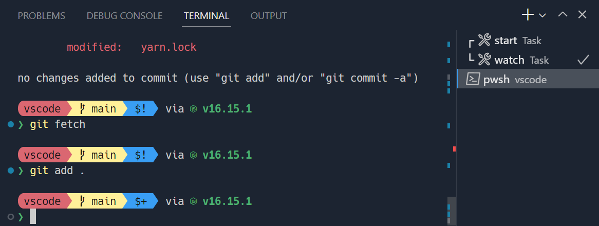
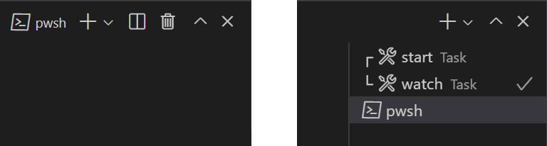
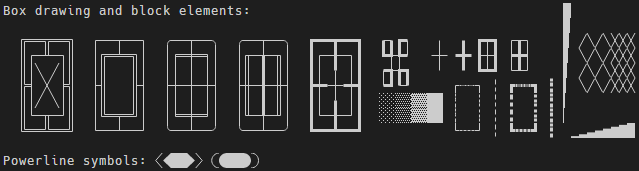

Terminal Appearance
The look of Visual Studio Code's terminal can be customized extensively.

Sapphire theme with custom Starship prompt using the font Hack with Nerd Font symbols
Text style
Text in the terminal can be customized with the following settings:
terminal.integrated.fontFamily: The font family to use, this takes a string in the format that fontFamily in CSS takes. For example,"'Fira Code', monospace"will configureFira Codeas the primary font andmonospaceas the fallback when it lacks glyphs.terminal.integrated.fontSize: Changes the font size of text in the terminal.terminal.integrated.letterSpacing: Configures additional horizontal spacing between characters in pixels.terminal.integrated.lineHeight: Configures additional spacing vertical between characters as a multiplier of the regular line height. For example,1.1will add 10% additional vertical space.terminal.integrated.fontWeight: Configures the font weight of "normal" text.terminal.integrated.fontWeightBold: Configures the font weight of "bold" text.
Powerline symbols and Nerd Fonts
Powerline fonts are special patched fonts that contain additional characters that can be used in the terminal. VS Code's terminal renders some of the Powerline symbols without needing to configure a font, but if more glyphs are desired, configure a Powerline font with the font family setting. Powerline fonts typically end in " for Powerline", the following setting is an example of how to configure a DejaVu Sans Mono that has been patched:
"editor.fontFamily": "'DejaVu Sans Mono for Powerline'"
Nerd Fonts work the same and typically have a " NF" suffix, the following is an example of how to configure Hack's nerd fonts variant:
"terminal.integrated.fontFamily": "'Hack NF'"
Terminal cursor
The terminal cursor style and whether it blinks can be customized with the following settings:
terminal.integrated.cursorStyle: Defines the shape of the cursor, can be block, line or underline.terminal.integrated.cursorWidth: How wide in pixels the cursor should be when the cursor style is set toline.terminal.integrated.cursorBlinking: Whether the cursor should blink when the terminal is focused.
Customizing tabs
Terminal tabs appear on the right of the terminal view when there are two or more terminals by default, showing the active terminal in the view header when there is only one.

Visibility
The default visibility is designed to save horizontal space, but may not be desirable. How tabs are presented can be configured with the following settings:
terminal.integrated.tabs.hideCondition: When to hide the tabs to the right, set to"never"to always show them.terminal.integrated.tabs.showActiveTerminal: When to show the active terminal in the terminal view header.terminal.integrated.tabs.showActions: When to show the active terminal's actions in the view header.terminal.integrated.tabs.location: Whether the tabs should be shown on the left or right of the terminal.terminal.integrated.tabs.enabled: Whether to use tabs, disabling will show the original dropdown view.
Tab text
The text on each tab is determined by the following settings:
terminal.integrated.tabs.title: Tab title.terminal.integrated.tabs.description: Text that appears to the right of the title.terminal.integrated.tabs.separator: Separator character between the title and description.
By default, the title displays what the shell's detected process name.
Other terminals often display the escape sequence sent by the shell as the title, which can be configured with:
"terminal.integrated.tabs.title": "${sequence}"
Icons
Each terminal has an associated icon that is determined by its terminal profile. The default icon and its color, which will be used if not defined in a profile, can be configured with the terminal.integrated.tabs.defaultIcon and terminal.integrated.tabs.defaultColor settings.
Status
A terminal's "status", if any, is signified by an icon that appears on the right of the tab. Some statuses involve animation. If this is distracting the animation can be disabled with:
"terminal.integrated.tabs.enableAnimation": false
Visual bell
When the terminal's bell is triggered, a yellow bell icon is briefly shown. This can be disabled with terminal.integrated.enableBell and the duration can be configured with terminal.integrated.bellDuration.
Terminal colors
While the terminal is capable of displaying true color, programs commonly use 8 ANSI colors (black, red, green, yellow, blue, magenta, cyan and white) and bright variants of each. These ANSI colors are determined by the active color theme, but they can also be configured independently from the theme with the workbench.colorCustomizations setting.
Whether bold text uses the normal ANSI colors or the bright variant can be configured with the terminal.integrated.drawBoldTextInBrightColors setting.
Minimum contrast ratio
Terminals often have contrast issues due to some conflict with dark/light themes, ANSI colors or shells/programs running, and more.
The minimum contrast ratio feature solves this problem by either increasing or reducing the luminance of the text's foreground color until a 4.5:1 contrast ratio is met.
One downside of this is that colored text may sometimes lose some of its saturation. This feature can be configured or disabled to get the original colors with:
"terminal.integrated.minimumContrastRatio": 1
GPU acceleration
The terminal features three different renderers, each of which have different trade offs:
- WebGL renderer - True GPU acceleration.
- Canvas renderer - GPU acceleration by using the
CanvasRenderingContext2Dweb API, slower than WebGL but faster than DOM. - DOM renderer - A fallback renderer that's much slower but has great compatibility.
GPU acceleration driven by the WebGL renderer is enabled in the terminal by default. This helps the terminal work faster and display at a high FPS by significantly reducing the time the CPU spends rendering each frame.
When on Linux VMs, browsers that don't support WebGL, or machines with outdated drivers, WebGL may not work properly.
The default terminal.integrated.gpuAcceleration value of "auto" tries the WebGL, canvas, and DOM renderers sequentially, settling at the first without detected issues.
Sometimes this detection doesn't work and requires manual intervention, setting terminal.integrated.gpuAcceleration to "dom" typically resolves rendering-related problems like these at the cost of performance.
Custom glyphs
When GPU acceleration is enabled, custom rendering, rather than the font, improves how some characters display in the terminal. These include box drawing characters (U+2500-U+257F), block elements (U+2580-U+259F) and a subset of Powerline symbols (U+E0B0-U+E0B7). This means that the configured font does not need to support these characters as well as having the characters draw pixel perfect and stretch to the size of the entire cell.
Below are some examples of these characters with custom line height and letter spacing configured. Notice how there are no gaps between cells thanks to the custom glyphs:

This feature can be disabled by setting "terminal.integrated.customGlyphs": false.
Customizing your prompt
Most shells allow extensive customization of the terminal prompt. This is done by configuring your shell outside VS Code, typically by modifying the $PS1 variable, setting a $PROMPT_COMMAND or installing a plugin.
Some prompts like Starship and oh-my-posh show things like git status and work with most shells, so they're a good choice when starting out.
Common questions
Why is my terminal showing a multi-colored triangle or a black rectangle?
The terminal can have problems with GPU accelerated rendering in some environments. For example, you might see a big multi-colored triangle instead of text. This is typically caused by driver/VM graphics issues and the same also happens in Chromium. Work around these issues by launching code with the --disable-gpu flag or by using the setting "terminal.integrated.gpuAcceleration": "off" to avoid using the canvas in the terminal. See the GPU acceleration section for more information.
Why are the colors in the terminal not correct?
The minimum contrast ratio feature can cause colors to not be displayed as expected. It can be disabled with:
"terminal.integrated.minimumContrastRatio": 1